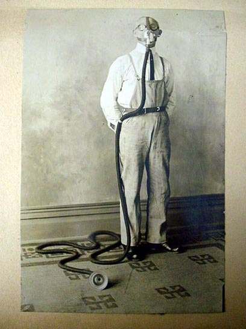

Aus „Staatlichkeitswahn“ von S. Blankertz / P. Goodman (1980 bei Büchse der Pandora erschienen) –
Aus der Zwickmühle des ewigen Verlierens ist der Anarchismus offensichtlich nicht heraus. Hat es in dieser Situation überhaupt einen Sinn, zur Aktion, zum gesellschaftlich-praktischen Experiment aufzurufen? – in einer Situation, in der uns die durchschlagende Gesellschaftsanalyse fehlt, in der wir nicht den Punkt kennen, an welchem sich Massen gegen das augenblickliche Wahnsinnssystem mobilisieren lassen.
Die neomarxistische „Kritische Theorie“ (Adorno), die in ihrer Gesellschaftsanalyse dem Anarchismus näher ist als dem Marxismus, verneint diese Frage. Traditionell fordert der Marxismus den Marxisten auf, sich im Bewusstsein auf der historisch erfolgreichen Seite zu stehen, politisch zu engagieren, indem er das Notwendige vollzieht.
 Die historisch erfolgreiche Seite hat sich aber nur dem Namen nach als erfolgreich erwiesen. Mehr als die Hälfte der Erdbewohner wird von Regierungen beherrscht, die den Namen des Marxismus tragen, die sich aber als unfähig erwiesen, marxistische Dialektik in die (befreiende) Tat umzusetzen. Die (marxistische) Philosophie habe ihre Verwirklichung „verpasst“, sagt Adorno. Politisches Engagement wird in diesem Augenblick unsinnig, weil nicht mehr klar ist, was praktisch notwendig wäre. Das Engagement wird theoretisch: Es gilt der Frage nachzugehen, welche die gesellschaftlichen Bedingungen sind, die die Verwirklichung der (marxistischen) Philosophie vereitelt haben und wie die Chancen für den qualitativen Fortschritt in der Zukunft stehen. Diese zweite Frage – (die erste ist in unserem Zusammenhang nicht bedeutsam, obwohl sie die vielleicht wichtigere ist) – wird bei Adorno nicht dogmatisch beantwortet im Sinne guter Chancen unter der Voraussetzung eines richtigen Aufbaus der Organisation des Proletariats. Im Gegenteil, die Chancen stehen, wie Adorno meint, schlecht: Praxis wurde „vertagt“. Politisches Engagement, das nicht in den Bann das Bestehenden geraten will, kann nur vorsichtig darauf bedacht sein, einen Rückfall in die Barbarei zu verhindern, da in diesem Falle selbst die geringste Hoffnung auf qualitativen Fortschritt schwinden müsste. Aber die wesentliche Aufgabe bleibt, die besseren Möglichkeiten denkend zu erhalten; zu erhalten für eine zukünftige, bessere Praxis, die noch nicht auszumachen ist. Da dies eine Aufgabe des Intellektuellen ist, steckt in diesem Konzept unweigerlich der Vorwurf gegen alle anderen Menschen, Vollstrecker, Mitläufer oder doch Dulder des bestehenden Schreckens zu sein.
Soweit damit gemeint ist, dass „wir alle“ in gewissem Sinne schuldig sind, stimmt der Anarchist zu. Aber was passiert, wenn ein Individuum, oder gar einer Gruppe die „Schuld“ erkennt oder doch eine Ahnung davon bekommt? Bevor wir die anarchistische Antwort darauf in Kontrast zu Adorno betrachten, will ich einen kurzen Exkurs zu Herbert Marcuse machen.
Marcuse hat im wesentlichen denselben theoretischen Hintergrund wie Adorno (wobei uns die diversen Unterschiede hier nicht interessieren). Auch seine Einschätzung der Chance von wirklich befreienden Alternativen zum Bestehenden war pessimistisch. Dann zeigten in den 60er Jahren unter- und überpriviligerte Randgruppen offenen Unmut. Persönlich engagiert, theoretisch aber durchaus vorsichtig, bezog Marcuse diese Entwicklung in seine Überlegungen ein und kam zu dem Schluss, dass dies die (bessere) Praxis sei, die die (kritische) Theorie zwar nicht hatte voraussehen können, in der sie sich aber verwirklichen könne. Die Interpretationen der weltweiten Jugendrevolte der 60er Jahre gehen nun auseinander. Die optimistischste bescheinigt ihr, sie habe den Rückfall in die Barbarei verhindert (in den USA z.B. die Machtübernahme durch Pentagon und CIA). Die pessimistischste behauptet ihr vollkommenes Scheitern. Auf jeden Fall aber sind die hoffnungsvollen Perspektiven nicht verwirklicht. („Der Berkley-Aufstand ist das erste menschliche Ereignis seit viertausend Jahren“, hatte ein Studentenführer 1963 geprahlt.) Der distanzierte „Kritische Theoretiker“ hat es darum einfach, Marcuse vorzuwerfen, er habe eine durch persönliches Engagement hervorgerufene, übertriebene Beurteilung jener Bewegung vorgenommen, die der „Kritischen Theorie“ und ihren Ansprüchen an die Praxis in Wirklichkeit nie gewesen sei. Praxislosigkeit sei besser als gescheiterte Praxis. Denn Praxislosigkeit erlaube, die Theorie rein zu halten, also die Möglichkeit zukünftiger, besserer Praxis, während gescheiterte Praxis auf den Misthaufen der Geschichte komme.
Der Misthaufen der Geschichte ist aber der Dünger der Geschichte überhaupt. Nur positive politische Aktionen (auch gescheiterte) machen den Verlauf der Geschichte aus (Paul Goodman, Anarchistisches Manifest); und nur die kann uns zeigen, was menschenmöglich ist – im Guten wie im Schlechten. Und wenn wir ein Programm der “besseren Möglichkeiten“ oder einer „besseren Praxis“ entwickeln, können wir dies nur, indem wir die Geschichte als Material benutzen – egal, ob wir Utopie negativ oder positiv auszeichnen wollen. Der „Kritische Theoretiker“ ist auf das angewiesen, was er verachtet. Auf der theoretischen Ebene ist das unlauter. Auf der moralischen Ebene ist das unmoralisch. Aber mehr noch: Da sich der „Kritische Theoretiker“ weigert, an der Geschichte teilzunehmen, weil er den Silberstreifen am Horizont noch nicht sieht, überlässt er die Geschichte der Reaktion.
Ein gescheiterter Beitrag zur Geschichte der besseren Möglichkeiten bereichert wenigstens die Tradition der Freiheit und mag lehrreich für die kommende Generation sein. Die Weigerung, an der Geschichte teilzunehmen, weil der Erfolg zweifelhaft sei, bedeutet, den Nachfahren eine Geschichte zu präsentieren, in der die Reaktion als allgewaltig erscheint – befreiende Praxis muss dann als noch unmöglicher erscheinen al je zuvor. Der „Kritische Theoretiker“ zerstört die Tradition, die er erhalten will.
Das Konzept, das sich in dieser Kritik zeigt, scheint dazu aufzufordern, wie Don Quichotte gegen Windmühlen anzurennen; und in der Tat wird Anarchisten genau das oft genug vorgehalten. Aber gerade die Angst vor der Lächerlichkeit, der „traurigen Gestalt“, die man abgeben könnte, ist ein besonders gut funktionierendes Instrument des Konformitätsdrucks. Die Schwierigkeit, der sich unser Konzept wirklich gegenübersieht, ist die Frage: Wie bekomme ich angesichts eines überwältigenden Anpassungsdrucks, der mich bis in meine mir am unmittelbarsten erscheinenden Bedürfnisse herein prägt, heraus, welche meiner Impulse potentiell befreiende Kraft haben? Oder, mit Marcuse ausgedrückt: „Wie können Menschen, die das Objekt wirksamer und produktiver Herrschaft gewesen sind, von sich aus die Bedingungen der Freiheit herbeiführen?“